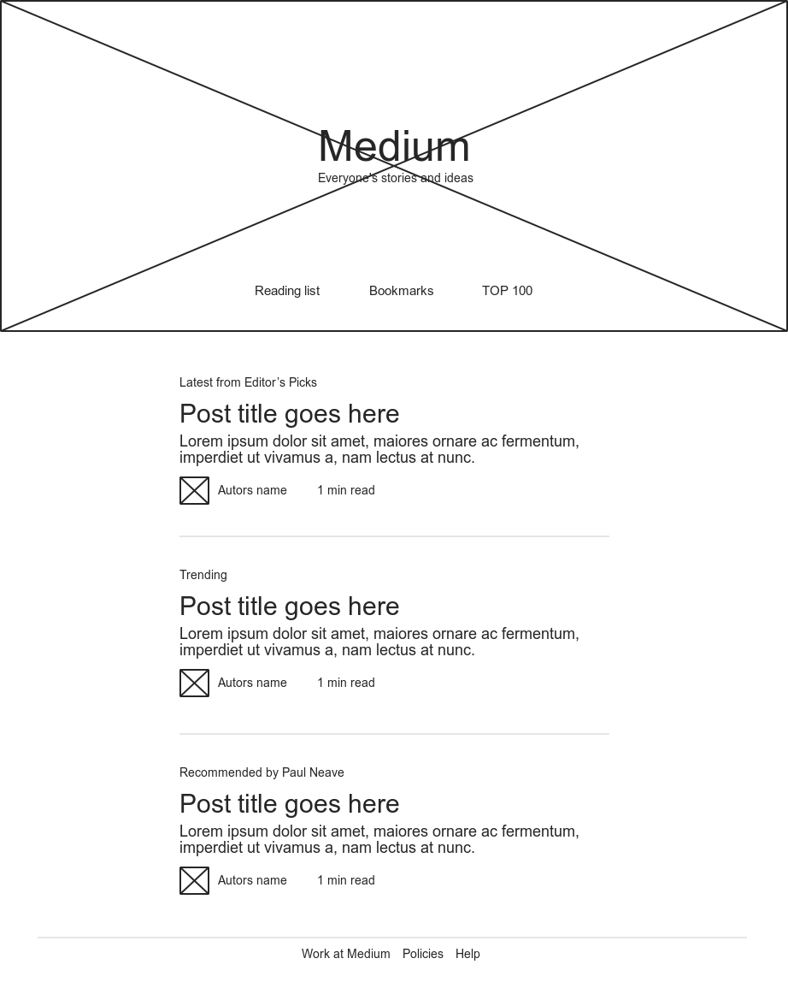
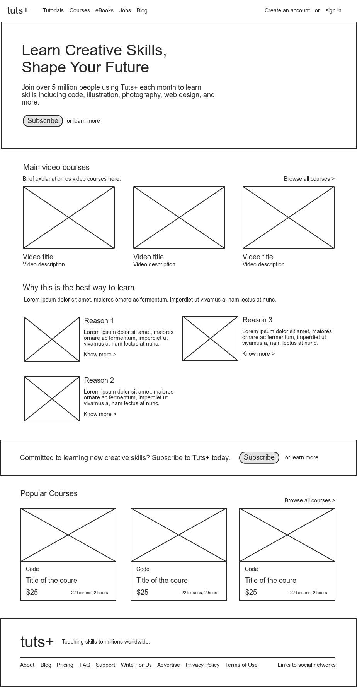
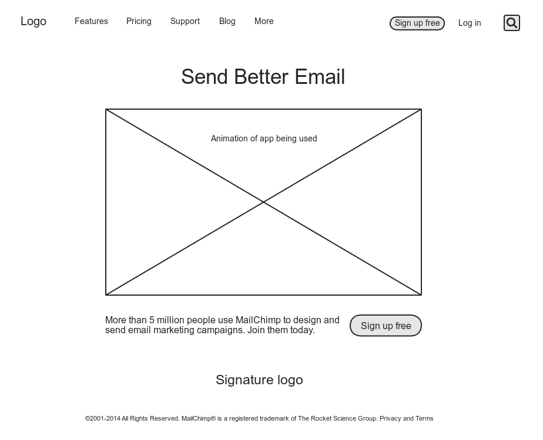

Favorite sites wireframes
Medium
The main problem Medium is trying to solve is getting rid of all visual elements that could could distract the users from the content of the site.
The main challange, then, is the limitation of text, links, buttons and functionalities that can be applied. Understanding what is the most important for the user once you can not add everything is a very hard task to get right.
Tuts+
The main problem that Tuts+ is trying to solve is to be very trustworthy and to present themselves as experts in the courses they sell.
The main visual challange for this site is to organize all courses and present tem in interesting ways that are going to convert. One interesting way of doing this is showing their most popular courses on the landing page, as well as the reasons they are the best at what they do.
Mailchimp
The main problem Mailchimp is trying to solve is making the process of creating and sending email marketing an easy thing to do.
To solve this problem, the main visual challange they face is quickly presentig how easy using the app is. For that, the site shows an animation os a newsletter being created at the moment, with just a few drag and drops.